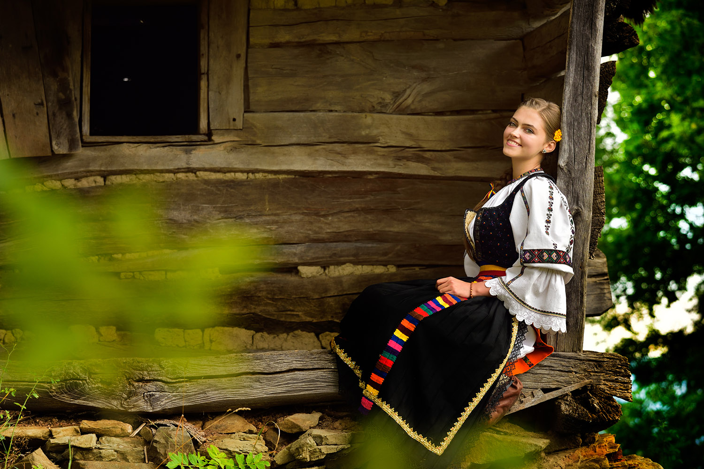
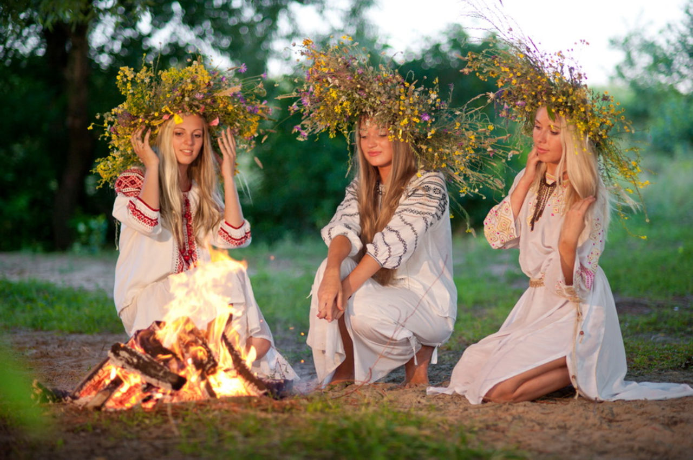

- From rainmaking to leaving gifts by the window for the fate fairies -
Culture

While sometimes initially reserved when first meeting people, Romanians are known for being hospitable,
warm, animated and opinionated people with a good sense of humour
The culture of Romania is an umbrella term used to encapsulate the ideas, customs and social behaviours of the people of Romania that
developed due to the country's distinct geopolitical history and evolution. It is theorized and speculated that Romanians and related
peoples (Aromanians, Megleno-Romanians, and Istro-Romanians) are the combinations of descendants of Roman colonists and people indigenous
to the region who were Romanized.
The Dacian people, one of the major indigenous peoples of southeast Europe, are one of the predecessors of the Proto-Romanians.
It is believed that a mixture of Dacians, Romans, and Illyrians are the predecessors of the modern Romanians, Aromanians, Megleno-Romanians,
and Istro-Romanians. Modern Romanian culture visibly reflects a tremendous amount of Eastern European influences. In addition, Romanian culture
shares several similarities with other ancient cultures, such as that of the Armenians.
Modern Romanian culture emerged and developed over roughly the last 250 years under a strong influence from Western culture,
particularly French and German culture.
Handshaking is the most common form of greeting.
Guests are always fed.
Men indicate their respect for women by a tip of the hat, a kiss on the hand strictly avoiding her eyes, or standing to offer them a seat.
It is also customary for younger people to defer to their elders.
It’s quite common to stick around once a meal (lunch or dinner) is over.
It’s not considered impolite to ask a person’s age, politics, income, or religion, so don’t become offended.
When visiting someone at home it’s common to offer a small gift. Interestingly, if giving the gift of flowers, the number of
flowers presented should always be odd.
The family is the foundation of the social structure and forms the basis of stability for most people.
The individual derives a social network and assistance in times of need from their family.
Families are patriarchal. The father is the head of the family.

Tradition and Folklore
The Romanian population has traditionally and historically been rural dwellers. However, the country experienced widespread industrialisation
and urbanisation during the communist period. Today, more than half of the Romanian population (54%) lives in urbanised areas. Modern life has
influenced a rise in cosmopolitanism in the cities. However, folk traditions and rural practices remain strong in certain parts of the country.
For example, sheep herding, weaving and carpentry are still common in rural villages.
Romania also continues to have a strong tradition of folklore that informs many of its customs and traditions.
There are many tales of witches, giants, ghosts, spirits, heroes, fairies and monsters throughout Romania. Many of these have a pre-Christian origin.
For example, the night before the Feast of Saint Andrew is marked by several customs aimed at protecting both people and their homes and animals from
evil spirits (such as stringing up garlic). Some would consider this night the Romanian equivalent of Halloween. Some people also believe in the existence
of supernatural occurrences (e.g. spirits and witchcraft). This is more common among Roma communities and in rural, traditional areas (such as Maramures).
Urban Romanians and the younger generations generally do not believe these stories, seeing them more as cultural superstitions.
To many, Romania is still a land of myth and legend. And considering the number of traditions that are still present in Romanians’ everyday lives, this may
not be such a cliché.
From rainmaking to leaving gifts by the window for the fate fairies, discover the most popular Romanian customs, a true gateway to the country’s culture.
We’ve all heard of Dracula but do you know any of the other fascinating legends and myths of Romania? Richly marked with medieval castles, cities, and ruins,
Transylvania is home to the real Count Dracula, portrayed in fiction by Bram Stoker as a vampire. This particular myth has been milked by Hollywood to such an
extent that it no longer scares anybody.
The Romanian folklore is a big happy family. Vampires, fairies, mythological creatures, and monsters co-exist in tales and stories. Even more, from spooky
legends to love rituals, Romanian culture has them all. What do you need today? Maybe it is a bedtime story, for your little one? Or a love story would be better,
to melt your other half’s heart? No matter what you choose, there is a Romanian story for every day, mood, or occasion.